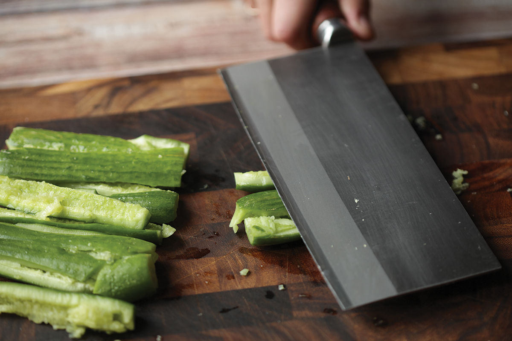
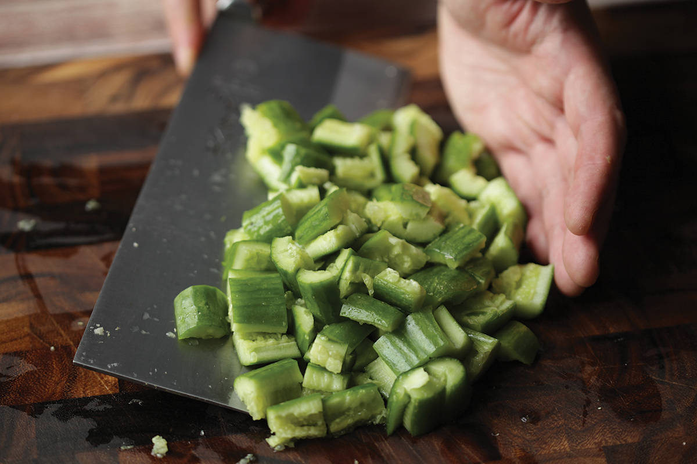
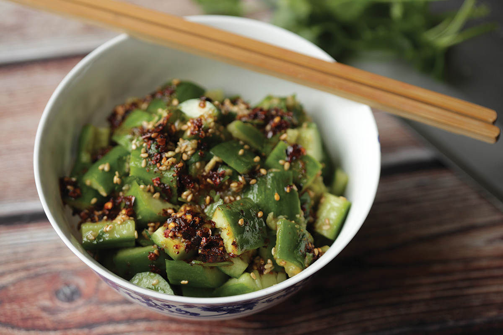

SICHUAN SMASHED CUCUMBER SALAD
|
Yield Serves 4 |
Active Time 5 minutes Total Time 5 minutes |
INGREDIENTS
For the Dressing:
2 teaspoons (8 g/about 2 medium cloves) minced garlic
1 teaspoon (4 g) sugar
1 teaspoon (5 ml) roasted sesame oil
1 tablespoon (15 ml) light soy sauce
2 teaspoons (10 ml) rice vinegar.
For the Salad:
1 large English or 4 small Persian or Japanese cucumbers (about 1 pound/450 g total)
1 tablespoon (10 to 12 g) toasted sesame seeds
Handful of chopped fresh cilantro leaves and fine stems
Kosher salt
2 to 3 tablespoons (30 to 45 ml) Sichuan Málà Chile Oil (here) or any other chile oil (optional)
Smashed cucumbers with garlic are a classic side dish throughout China that can be made in just a couple minutes. Smashing English or Persian cucumbers causes them to split open, which lets them absorb plenty of dressing while staying fresh and crisp.
DIRECTIONS
1 For the Dressing: Combine all the dressing ingredients in a large bowl.
2 For the Salad: Place a cucumber on your cutting board. Using the side of a cleaver, a Chinese chef’s knife, or the bottom of a skillet, pound the cucumber all along its length until the skin has split open from end to end. Roughly chop into bite-sized pieces.
3 Transfer the cucumber to the bowl with the dressing, add the sesame seeds and cilantro, and toss to combine. Season with salt to taste, drizzle with chile oil if desired, and serve.


